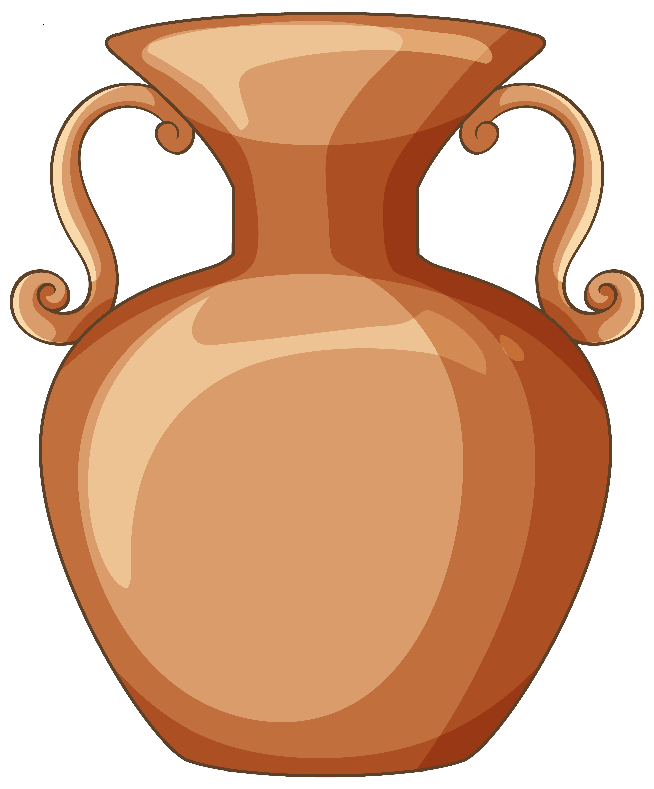

Descrição: No Tabernáculo, não havia um único vaso específico para carregar azeite, mas sim diversos recipientes, cada um com uma função. As Escrituras mencionam vasos usados para o azeite da unção e também vasos destinados ao azeite das lâmpadas da Menorá.
Clique nos blocos do mapa para tentar encontrar o artefato sagrado!
Boa sorte, explorador!
⏱️ Tempo: 0s
🏆 Recorde: --